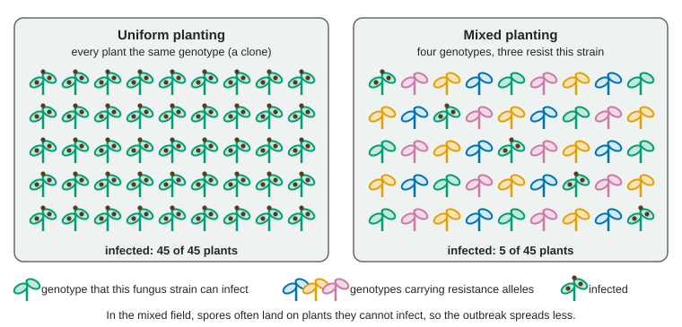

Natural selection can only work with the variation a population already has. This page explains why populations with more genetic variation are more likely to survive a new disease or a change in their environment, why genetically uniform crops and small inbred populations are so vulnerable, and how heterozygote advantage keeps variation alive.
Variation is a population's insurance
Think of a population's alleles as a toolbox it did not choose. Mutation adds new tools at random, and sexual reproduction reshuffles them into new combinations every generation. Most of the time, many of these differences hardly matter. But when the environment changes, some of them suddenly do:
- A new disease, a drought or a temperature shift arrives.
- Individuals differ in how well they cope, because they carry different alleles.
- Those whose alleles happen to help survive and reproduce more.
- Their alleles become more common, and the population adapts and persists.
The key point is timing: the useful alleles must already be present when the change arrives. A population cannot produce them on demand. So the more variation a population carries, the more likely it is that some individuals can survive whatever comes. Individuals who survive a disease because of their alleles show disease resistance.
Variation is not only in visible traits but in molecules. A small fish of the Atlantic coast has two common alleles for the enzyme lactate dehydrogenase. One codes for an enzyme form that works faster in cold water; it is most frequent in northern populations and rare in southern ones. Because the species carries both forms, each regional population can match its enzymes to its waters.
Uniform populations are vulnerable

A population with little variation has few different alleles, so it is unlikely to include anyone able to survive a new threat. This is population vulnerability. Three kinds of population are most at risk:
- Clones. Many crops are propagated from cuttings or tubers, so every plant has the same alleles. A pathogen strain that can infect one can infect them all (Figure 1).
- Small, isolated populations, where genetic drift removes alleles and inbreeding raises homozygosity.
- Populations that passed through a bottleneck, which keep only the alleles of the few survivors.
A monoculture, one crop variety grown over a large area, is the clearest case. In Ireland in the 1840s most potatoes belonged to one variety, propagated from pieces of tuber. When a water mold that rots potatoes arrived, it destroyed most of the crop for several years, and about a million people died. Bananas repeat the story: the Gros Michel was lost to a soil fungus in the 1950s, and the clonal Cavendish that replaced it is threatened by a new strain of the same fungus.
| Genetically uniform | Genetically varied | |
|---|---|---|
| Examples | Clonal crops; small inbred populations | Large, sexually reproducing populations; mixed plantings |
| Chance that some individuals resist | Low | Higher |
| How disease spreads | Every neighbor is a host | Resistant individuals slow spread |
| Likely outcome | Large losses, possibly total | Survivors reproduce and the population adapts |
Mixing helps. When farmers plant rows of a susceptible rice variety among rows of a resistant one, spores from an infected plant mostly land on plants they cannot infect, so outbreaks spread more slowly and both varieties yield well.
Worked example: percent reduction. Variety H plants were 58% infected when grown alone and 9% infected when grown among rows of a resistant variety. By what percent did infection fall?
Step 1. Difference. 58 − 9 = 49 percentage points. Step 2. Divide by the starting value. 49 ÷ 58 = 0.845. Step 3. Convert. 0.845 × 100 = 84.5%, so infection fell by about 84%. Note that "fell by 49 percentage points" and "fell by 84%" describe the same change in two ways.
Restoring variation in small populations
By the early 1990s, a population of wild cats cut off by roads and towns in the southeastern United States had shrunk to a few dozen adults. Inbreeding showed: many kittens had heart defects and kinked tails, and males had poor sperm. In 1995, eight females from a related population were released into the area. Their offspring brought new alleles, heterozygosity rose, defects became rarer and the population grew several-fold. Bringing in new alleles by gene flow in this way is sometimes called genetic rescue. It works because harmful recessive alleles are less often inherited in pairs when a population has more different alleles.
Heterozygote advantage

Some variation is actively kept by selection. In heterozygote advantage, heterozygotes have higher fitness than either homozygote (Figure 2). Where malaria is common, people with one sickle-cell allele (HbA HbS) are strongly protected against severe malaria and rarely have sickling problems. People with two normal alleles are more likely to die of malaria, and people with two sickle-cell alleles have sickle cell disease. Selection therefore removes some HbA alleles and some HbS alleles every generation, and the carriers pass on both. Both alleles stay common: a form of balancing selection. Where malaria is rare, the carrier advantage disappears and the HbS allele slowly declines.
Worked example: how many carriers? In a population where malaria is common, the HbS allele frequency is q = 0.10.
Step 1. p = 1 − q = 0.90. Step 2. Carriers. 2pq = 2 × 0.90 × 0.10 = 0.18, so 18% of newborns are carriers. Step 3. Affected. q² = 0.01, so 1% have sickle cell disease. Step 4. Interpret. Most HbS alleles sit in carriers, where they help; this is why selection against affected children does not remove the allele.